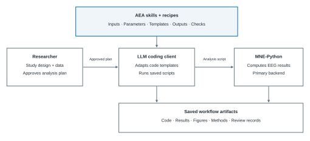
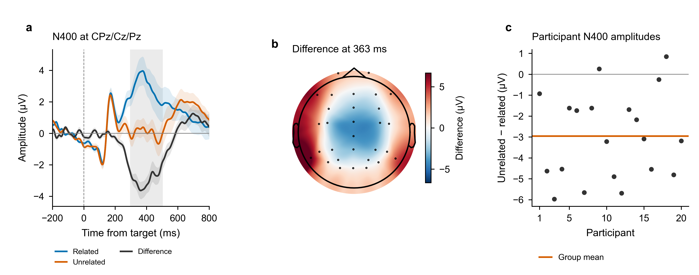

Automated EEG Analysis
AEA is an open library of 22 EEG analysis skills and 10 recipes. They give Codex CLI or Claude Code the domain instructions to generate and run analysis code with MNE-Python. You specify the study and approve the plan; the workflow keeps the code, results, figures, methods text, and review together.
Each skill specifies inputs, parameters, code templates, outputs, and checks. A recipe combines skills for a particular paradigm. The library has a numerically certified core; coverage depends on the output and configuration.
Install AEA Find a recipe Try the N400 tutorial


Installation
Install Git, Conda, and a signed-in Codex CLI or Claude Code client first.
Choose a recipe that matches your paradigm.
The example below uses compatible semantic-priming data; replace
n400-semantic with the recipe for your study.
Keep the repository root as your working directory. Put your study's data
in projects/my-study/raw/ before running the recipe, or follow
the data setup guide
for another layout.
git clone https://github.com/dengzhe-hou/auto-eeg-analysis.git
cd auto-eeg-analysis
conda env create -f environment.yml
conda activate aeais
python tools/install_skills.py --agent codex
codex$eeg-recipe n400-semantic --data projects/my-studygit clone https://github.com/dengzhe-hou/auto-eeg-analysis.git
cd auto-eeg-analysis
conda env create -f environment.yml
conda activate aeais
python tools/install_skills.py --agent claude
claude/eeg-recipe n400-semantic --data projects/my-studyReview the detected data and confirm the analysis plan before execution. Configure the reviewer before running an audited workflow.
See Getting started for the complete setup,
and Platform support for environment checks,
Windows, and optional dependencies. These commands use main;
see version selection
for the fixed v0.3.2 release.
Usage
- Run a recipe
eeg-recipe - Choose a recipe for your paradigm, check its data requirements, confirm the plan, and run the specified analysis.
- Custom analysis
eeg-pipeline - Define the claims, contrasts, and design. Combine the relevant skills with a frozen analysis plan and recorded outputs.
- Review an analysis
eeg-audit - A fresh reviewer checks whether the plan, statistics, figures, and methods support the reported findings.
Skills and recipes
Skills are plain Markdown specifications with code paths, reporting requirements, and documented failure modes. They cover preprocessing, analysis, statistics, figures, and reporting. Use the task reference to find a skill and the choices your analysis plan needs.
All 22 skills
eeg-preprocessFiltering, reference, bad channelseeg-icaICA and component labelingeeg-epochSegmentation and artifact rejectioneeg-erpERPs and component measureseeg-tfrTime-frequency analysiseeg-spectralPower spectra and spectral parameterseeg-statsStatistical inferenceeeg-decodingMVPA and temporal generalizationeeg-behaviorBehavioral and trial-level associationseeg-connectivityFunctional and directed connectivityeeg-microstateMaps and temporal dynamicseeg-complexityEntropy and complexity measureseeg-sourceSource localizationeeg-bidsBIDS-EEG conversioneeg-qcData-quality checkseeg-group-compareGroup comparisons and effect sizeseeg-figureFigures and data-fidelity checkseeg-methods-textCOBIDAS-MEEG methods texteeg-auditIndependent model revieweeg-reportReports and reproducibility receiptseeg-pipelineAnalysis orchestrationeeg-recipeRecipe execution and version tracking
Checks apply to specific outputs and configurations. See the per-skill evidence.
Recipes
Select a recipe to read its data requirements, parameters, and source references. Declared status and available validation are separate; follow the recipe's configuration when reproducing a result.
| Recipe | Analysis | Declared status |
|---|---|---|
ern-flankers |
N2, response-related negativity, frontal theta | Validated |
mmn-oddball |
Auditory mismatch negativity | Validated |
p300-oddball |
P300 to rare targets | ExperimentalGroup-validation results recorded |
n170-faces |
Faces versus non-face controls | Validated |
n170-face-inversion |
Upright versus inverted faces | Experimental |
n400-semantic |
Semantic priming | Validated |
alpha-attention-cueing |
Posterior alpha modulation | Experimental |
resting-microstate |
Resting microstate maps and dynamics | Validated |
resting-spectral-connectivity |
Power spectra, aperiodic fits, connectivity | Validated |
complexity-anesthesia |
Continuous complexity and entropy | ValidatedAwake-state check; anesthesia untested here |
Recipe files and source references are in the source catalogue.
N400 tutorial
Follow a complete semantic-priming recipe with 20 ERP CORE participants. The runner saves the plan, program, epochs, participant averages, statistics, figures, and methods text. Replay recomputes group statistics from the saved averages.


- Run. Supply an existing N400 BIDS dataset and a new output directory.
- Check. Inspect the results and the recorded configuration.
- Replay. Recompute group statistics without preprocessing again.
Replot without raw EEG · Get and prepare the data · Adapt to your study · Saved numerical results
Recorded results and scope
The CPz/Cz/Pz analysis at 300–500 ms retained 60 trials per condition for each participant. Unrelated minus related amplitude was −2.957 µV (SEM 0.466), with one cluster at p = .0002. In the saved run, replay reproduced t maps, cluster masks, p values, and permutation null values exactly. The figure can also be regenerated from the compact public arrays.
This documented branch omits ICA and amplitude rejection. The 20-person worked-example cohort is smaller than the 40-person source cohort, and its ROI test is separate from the historical all-channel certification. Scalp maps are descriptive; clusters do not localize each electrode or time point. This post-v0.3.2 example does not measure LLM success rate, time savings, held-out performance, or clinical efficacy.
Earlier N100 and Flankers examples
These single-participant examples were corrected after v0.3.2. Figures, scripts, original plans, positive and null results, and correction records remain accessible through the historical examples. They do not establish population effects or LLM-related speedup.
Validation
The numerically certified core covers ERP amplitudes and cluster statistics in selected configurations, plus spectral band power checked against an independent Welch implementation. Other checks have their own stated scope; certification does not apply to every option or generated workflow.
MNE-Python is the primary backend. EEGLAB and FieldTrip provide independent comparisons and selected alternative paths, with the numerical conventions documented for each capability.
Methods text
AEA reads pipeline logs and writes a COBIDAS-MEEG paragraph. Every number from disk, not memory. No other EEG tool does this.
Project
AEA builds on the ARIS architecture and EEG domain knowledge, with MNE-Python for computation. The source code and development history are on GitHub.
- Download release v0.3.2
- Choose a version and read the changes
- Citation information
- Troubleshooting and questions or bug reports
- Contribute a recipe or skill
Significant contributors are invited as co-authors on the AEA paper. See the contribution guide for details.
Software uses the MIT licence. Recipe metadata uses CC BY 4.0.